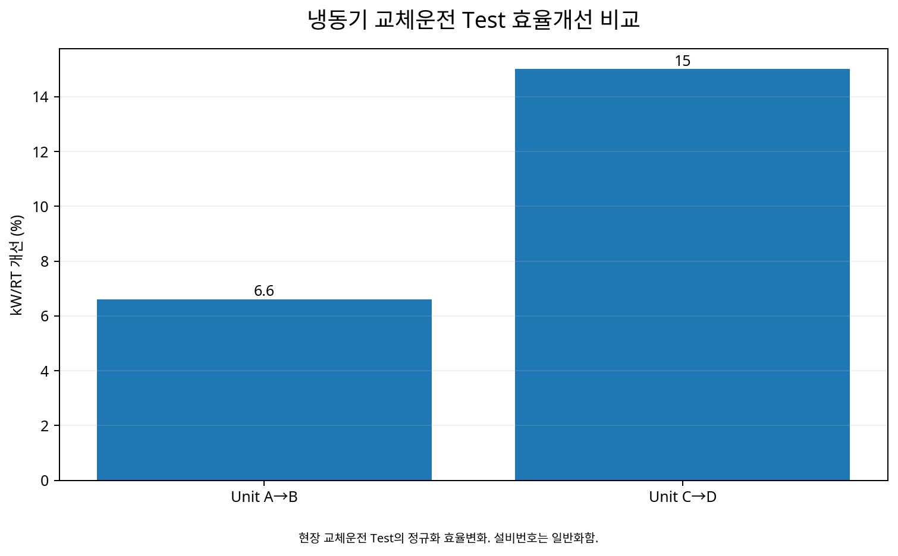

냉동기 교체운전 Test를 통한 호기별 kW/RT 실측 비교 및
고효율 운전순서 결정
동일·유사 용량의 냉동기라도 실제 효율은 같지 않다는 점에 착안하여, 운전호기를 실제로 교체하고 냉동부하와 전력을 동시에 측정해 호기별 kW/RT를 비교한 뒤 고효율 냉동기를 우선 가동하도록 운전 Priority를 정한 현장 Test 사례.
ChillerkW/RTField TestUnit RankingPriority Control1. 정격용량이 같으면 어느 냉동기를 가동해도 같을까?
대형 냉동 Plant에는 동일하거나 유사한 용량의 냉동기가 여러 대 설치된다. 하지만 같은 RT를 처리하더라도 노후도, 열교환기 상태, 압축기 성능, 냉각수조건, 냉매상태와 실제 부하율에 따라 소비전력은 달라질 수 있다.
따라서 Nameplate 효율이나 설치순서만으로 운전 Priority를 정하기보다 실제 부하에서 호기별 kW/RT를 측정하고 비교하는 것이 더 직접적인 방법이다.
2. 이 Test의 취지 — 설비를 바꾸기 전에 ‘운전순서’에서 절감기회를 찾는다
대형 Chiller Plant는 여러 대의 냉동기를 보유하고 있어 같은 냉동부하를 처리하는 방법이 하나만 존재하지 않는다. 예를 들어 2대가 필요한 부하에서도 어느 호기를 조합하느냐에 따라 전체 소비전력이 달라질 수 있다. 따라서 설비교체나 대규모 투자에 앞서 현재 보유설비 가운데 어떤 호기를 먼저 운전하는 것이 유리한지를 확인하는 것은 비교적 빠르게 시도할 수 있는 운영개선 방법이다.
CASE56의 목적은 단순히 ‘좋은 냉동기’와 ‘나쁜 냉동기’를 구분하는 데 있지 않다. 실제 부하조건에서 각 호기의 효율을 계측하고, 교체운전으로 차이를 검증하여 냉동기 선택을 경험과 고정순번에서 데이터 기반 Priority로 전환하는 데 있다.
3. 왜 같은 용량의 냉동기도 실제 효율이 달라지는가?
같은 정격용량과 동일한 제조사·형식의 냉동기라도 장기간 운전하면 열교환기 오염, 냉매·냉동유 상태, 압축기 성능, Sensor 편차와 제어상태가 서로 달라질 수 있다. 또한 냉각수 입구온도와 유량, 냉수온도, 실제 부하율에 따라서도 kW/RT가 달라진다.
따라서 정격 COP나 Catalog 값은 설계·선정에는 중요하지만 현재의 실제 운전효율을 완전히 설명하지 못한다. CASE56처럼 동일한 계통에서 실제 RT와 kW를 동시에 측정하면 현재 시점의 설비상태와 운전조건이 반영된 실효율을 비교할 수 있다.
4. 실제 현장에서는 냉동기별 효율차이가 확인되었다
에너지효율관리 시스템을 통해 호기별 원단위(kW/RT)를 Monitoring했고, 실제 냉동기를 다른 호기로 교체하는 Test를 수행했다.
| 교체운전 | 결과 | 현장 해석 |
|---|---|---|
| #10 → #9 | 원단위 6.6% 감소 | 부하가 증가하여 총 전력량은 증가 |
| #4 → #3 | 원단위 15% 감소 | 5℃ 구간 전력 약 150 kW 감소 |
실제 Test는 7월 16일 #10→#9, 7월 17일 #4→#3 교체운전으로 수행되었다. 이 결과는 ‘고효율 호기 우선운전’이라는 원칙을 단순 가정이 아니라 실제 교체운전으로 확인한 사례다.
5. 첫 번째 Test가 보여준 중요한 함정 — kW만 보면 판단이 뒤집힐 수 있다
#10에서 #9로 교체했을 때 kW/RT는 6.6% 좋아졌지만 부하가 증가하여 총 전력량은 오히려 증가했다. 이 결과는 냉동기 효율비교에서 가장 중요한 교훈 중 하나다.
전력(kW) = 처리부하(RT) × 에너지원단위(kW/RT). 따라서 더 많은 부하를 처리하면 효율이 좋아져도 총 kW는 증가할 수 있다.
그래서 교체운전 전·후의 전력차만 보고 ‘효율이 나빠졌다’고 판단하지 않고, 반드시 실제 RT로 정규화한 kW/RT를 함께 봐야 한다.
6. kW/RT는 어떻게 계산하고 무엇을 같이 측정하는가?
각 냉동기의 냉수유량과 공급·환수온도차로 실제 냉동부하(RT)를 계산하고, 같은 시간대의 냉동기 소비전력을 연결하여 kW/RT를 산출한다.
동시에 냉수·냉각수 입출구온도, 냉각수유량, Set Point와 부하율을 확인하면 호기효율 차이가 단순한 기계상태 때문인지 운전조건 차이 때문인지 해석하기 쉬워진다.
7. 공정한 교체운전 Test를 만들려면 조건을 최대한 맞춘다
두 호기의 kW/RT를 비교할 때 냉동부하와 냉각수온도가 크게 다르면 호기 자체의 차이와 운전조건 차이가 섞인다. 따라서 가능한 한 유사한 RT, 냉수 Set Point와 냉각수조건에서 비교하고, 완전히 같게 맞출 수 없다면 충분한 운전데이터를 이용해 부하구간별로 비교한다.
| 비교조건 | Before | After |
|---|---|---|
| 운전호기 | A | B |
| 냉동부하 RT | 측정 | 측정 |
| 냉각수 입구온도 | 측정 | 측정 |
| 냉수 Set Point | 확인 | 확인 |
| Chiller kW | 측정 | 측정 |
| kW/RT | 계산 | 계산 |
8. 한 번의 Test가 아니라 ‘효율곡선’을 만들어야 한다
냉동기의 효율은 부하율에 따라 변한다. 한 시점에서 A호기가 B호기보다 효율적이었다고 해서 모든 부하에서 항상 같은 순위라고 단정할 수 없다.
따라서 저부하·중부하·고부하 구간에서 각 호기의 kW/RT를 축적하여 Chiller별 Part-load Efficiency Curve를 만들면 운전 Priority를 훨씬 정교하게 결정할 수 있다.
9. 고효율 운전 Priority는 부하구간별로 달라질 수 있다
호기별 효율곡선을 이용하면 ‘항상 #3을 먼저 켠다’ 같은 고정순서보다 현재 부하에서 효율이 가장 좋은 호기를 선택할 수 있다. 두 대 이상이 필요한 경우에는 가능한 조합의 총전력을 비교한다.
kW/RT
이렇게 운전순서를 데이터화하면 숙련자의 경험에 의존하던 호기선택을 반복 가능한 운전기준으로 전환할 수 있다.
10. 효율이 낮은 호기는 ‘후순위’로 끝내지 않고 원인을 찾는다
특정 냉동기의 kW/RT가 지속적으로 높다면 단순히 사용하지 않는 것보다 성능저하 원인을 진단할 가치가 있다. 응축기·증발기 오염, 냉매상태, Sensor 오차, 냉각수조건, Control 설정, 압축기 성능 등이 원인이 될 수 있다.
즉 Ranking은 설비 폐기의 근거가 아니라 Maintenance Priority를 정하는 진단도구가 될 수 있다. 성능을 회복한 뒤 다시 Test하면 운전 가능한 고효율 호기 수를 늘릴 수 있다.
11. 호기선택은 Chiller만이 아니라 Plant 전체로 확장해야 한다
고효율 냉동기를 선택해 Chiller kW가 줄더라도 해당 호기에 연결된 냉수펌프·냉각수펌프·냉각탑 Fan의 전력이 크다면 Plant 전체에서는 다른 조합이 더 유리할 수 있다.
Chiller kW + CHWP kW + CWP kW + CT Fan kW → Plant Total kW → System kW/RT
따라서 최종 운전 Priority는 Chiller-only Ranking에서 Plant-level Ranking으로 발전시키는 것이 좋다.
12. 실제 Utility 최적화 활동에서 고효율 설비 우선가동은 주요 축이었다
프로젝트에서는 CDA·냉동기·보일러의 장비효율을 판단하여 고효율 기기를 우선 운전하는 활동을 별도 개선축으로 관리했다. 냉동기의 교체운전 Test는 이 전략을 현장에서 검증하는 구체적인 방법이었다.
또 다른 프로젝트 요약자료에서는 Utility 최적화 전체 활동군에서 설비효율 원단위가 1.20 → 0.88 kW/RT, 약 27% 개선된 결과도 제시되어 있다. 다만 이 값은 여러 최적화 활동이 포함된 전체 성과이므로 CASE56의 두 차례 교체운전만의 독립효과로 해석하지 않는다.
13. 운전 Priority Table을 EMS에 넣으면 지식이 시스템이 된다
부하구간별 호기효율을 표준화하면 EMS 화면에서 현재 RT에 따라 권장 운전호기와 조합을 제시할 수 있다. 운전자는 단순 Alarm이 아니라 ‘왜 이 호기를 먼저 켜야 하는지’를 kW/RT 근거와 함께 확인할 수 있다.
이 방식은 숙련 엔지니어의 경험을 없애는 것이 아니라, 현장경험을 데이터로 검증하고 다음 작업자에게 전달 가능한 운전지식으로 만드는 방법이다.
14. 효율 Ranking을 정기적으로 갱신하면 성능저하를 조기에 발견할 수 있다
한 번 만든 Priority Table을 영구적으로 사용하는 것도 바람직하지 않다. 열교환기 세관, 냉매보충, 정비, 계절별 냉각수조건과 설비노후화에 따라 호기별 효율순위는 바뀔 수 있다.
따라서 월별·계절별로 부하구간별 kW/RT를 다시 계산하고 과거 Benchmark와 비교하면 Efficiency Drift를 감지할 수 있다. 특정 호기의 kW/RT가 같은 RT와 냉각수조건에서 지속적으로 악화된다면 운전 Priority 변경뿐 아니라 예방정비를 검토할 수 있다.
15. 대수제어와 함께 보면 ‘몇 대 × 어떤 호기’ 문제가 된다
냉동부하가 증가하면 단순히 다음 순번의 냉동기를 추가하는 대신, 필요한 대수와 호기조합을 동시에 판단할 수 있다. 예를 들어 3,000 RT를 처리할 때 1대 고부하가 유리한지, 2대 부분부하가 유리한지는 각 냉동기의 Part-load Curve와 보조동력에 따라 달라진다.
따라서 운전최적화는 가동대수 최적화 × 호기선택 최적화 × 부하배분 최적화의 결합문제로 발전한다. 이는 단순 Ranking보다 실제 Chiller Plant Optimization에 가까운 접근이다.
16. 유지관리 후 성능회복 효과도 같은 방법으로 검증할 수 있다
효율이 낮은 호기에 세관, 냉매조정 또는 정비를 수행했다면 정비 전·후의 동일 부하구간 kW/RT를 비교하여 성능회복 여부를 확인할 수 있다. 이렇게 하면 정비가 단순 작업완료가 아니라 에너지성능 회복이라는 정량 KPI로 평가된다.
장기간에는 호기별 Efficiency Curve를 Asset Performance History로 관리하여 어떤 설비가 언제부터 성능이 저하되었고 정비 후 어느 수준까지 회복되었는지를 추적할 수 있다.
17. 확대응용 — 냉동기에서 다중 Utility 설비의 고효율 운전조합 최적화로
CASE56의 방법은 동일·유사 용량 설비가 병렬로 설치된 다른 Utility 설비에도 응용할 수 있다. 공기압축기는 kW/Nm³, 펌프는 kW/(m³/h) 또는 효율, 보일러는 연료투입 대비 유효열량처럼 서비스량으로 에너지를 정규화한 뒤 설비별 성능을 비교할 수 있다.
| 설비군 | 서비스량 | 대표 KPI | 운전결정 |
|---|---|---|---|
| 냉동기 | Cooling RT | kW/RT | 호기 Priority·조합 |
| 공기압축기 | CDA Flow | kW/Nm³ | Base/Trim·가동대수 |
| 펌프 | Flow·Head | kW/Flow·효율 | 대수·Speed |
| 보일러 | 유효 Steam/Heat | Fuel/Useful Heat | 호기 Priority·부하배분 |
공통 원리는 같다. 설비의 이름이나 설치순서가 아니라 동일한 서비스를 만드는 데 필요한 에너지로 비교하고, 현재 수요에서 가장 효율적인 조합을 선택하는 것이다.
18. AI 기반 Chiller Sequencing으로 확장
냉동부하, 냉수온도, 냉각수온도, 외기조건, 호기별 부하율과 kW를 충분히 축적하면 각 냉동기의 kW/RT를 현재 조건에서 예측할 수 있다.
RT
예측
kW 계산
System kW
결정
고정된 운전순서에서 벗어나 “현재 부하에서는 어느 냉동기가 가장 효율적인가?”, “두 대라면 어떤 조합이 최소전력인가?”를 실시간으로 판단하는 구조로 발전할 수 있다. 더 나아가 예측부하를 이용하면 다음 냉동기의 기동시점까지 미리 판단하여 불필요한 Start/Stop을 줄이는 Predictive Sequencing으로 확장할 수 있다.
19. 다른 공장·대형건물에 적용할 때
동일·유사 용량의 냉동기를 여러 대 보유한 반도체·디스플레이·배터리·자동차 공장, 데이터센터, 병원과 대형 상업건물에 적용할 수 있다. 다만 각 Chiller의 Type, 연식, 냉수·냉각수계통과 Part-load 특성이 다르므로 다른 현장의 Priority 순서를 그대로 복사해서는 안 된다.
핵심은 해당 Plant에서 호기별 효율곡선을 직접 만들고, 실제 부하분포와 Auxiliary Power까지 반영해 그 현장만의 Priority Map을 만드는 것이다.
데이터와 분석 시각화

20. Evidence & Measurement Boundary
#10→#9 교체운전에서 kW/RT 6.6% 감소, #4→#3 교체운전에서 kW/RT 15% 감소 및 5℃ 구간 전력 약 150 kW 감소는 현장 교체운전 Test 결과다.
반면 Utility 전체의 1.20→0.88 kW/RT 및 27% 개선은 여러 최적화 활동을 포함한 상위 수준의 성과이므로 CASE56 단독효과로 귀속하지 않는다. 호기별 비교에서도 냉동부하·냉각수조건·Set Point 등 운전조건 차이를 함께 확인한다.
21. Review 상태
Status: APPROVED / FINAL-LOCK